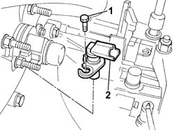
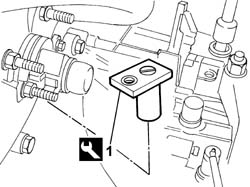
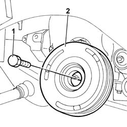
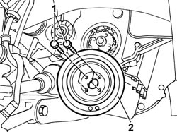

1092A10 CRANKSHAFT SERVICES PULLEY - R.R.
- Path
- Procedures > 10 ENGINE UNIT > 1092 VARIOUS ENGINE COMPONENT CONTROLS > 1092A CRANKSHAFT PULLEY AND IDLE PULLEYS > 1092A10 CRANKSHAFT SERVICES PULLEY - R.R.
- Kind
- repair procedure (removal / refitting; the operation number is the code)
- Applies to
- engines: 2.0 JTD 8V, 2.3 JTD 16V; all production periods
- Interactive page
- https://sloeber94.github.io/elrnDB-fDct/en/#/244000982
Applies to: engines: 2.0 JTD 8V; all production periods
 Removing
Removing
 Refitting
Refitting- Position the vehicle on a lift.
Op. 7055B54 UNDER-ENGINE GUARD - R R
Op. 4450B04 RIGHT FRONT WHEEL R R
Op. 1092G10 SINGLE ENGINE BELT R R
- Disconnect the electrical connection for the rpm sensor.
 | Description | Connector |
|---|---|---|
. | Rpm sensor | K046 |
1. Undo the fixing bolt.
2. Remove the rpm sensor.

Applies to: engines: 2.0 JTD 8V; all production periods
1. Fit the flywheel lock in the housing for the rpm sensor.
 | Description | Code | Function |
|---|---|---|---|
1 | Flywheel lock | 1.870.765.001 | Prevent flywheel rotation |

Applies to: engines: 2.0 JTD 8V; all production periods
1. Undo the fixing bolts (1a) and remove the auxiliary shaft drive pulley (1b).

Applies to: engines: 2.0 JTD 8V; all production periods
Refitting
Removing- Fit the auxiliary shaft drive pulley and tighten the fixing bolt to torque using the angular tightening tool.
 | Value - daNm | Fastening | Component | Ø |
|---|---|---|---|---|
. | 4+51° | Bolt | CRANKSHAFT PULLEY | - |
| Description | Code | Function |
|---|---|---|---|
. | Torque wrench | 1.860.942.000 | Connecting rod cap bolt angular tightening |
- Remove the flywheel lock fitted previously.
| Description | Code | Function |
|---|---|---|---|
. | Flywheel lock | 1.870.765.001 | Prevent flywheel rotation |
- Fit the rpm sensor in the housing on the bellhousing and tighten the fixing bolt.
- Connect the electrical connection for the rpm sensor.
| Description | Connector |
|---|---|---|
. | Rpm sensor | K046 |
Op. 1092G10 SINGLE ENGINE BELT R R
Op. 4450B04 RIGHT FRONT WHEEL R R
Op. 7055B54 UNDER-ENGINE GUARD - R R
- Remove the vehicle from the lift.
Applies to: engines: 2.3 JTD 16V; all production periods
Removing
Refitting- Position the vehicle on a lift.
Op. 7055B54 UNDER-ENGINE GUARD - R R
Op. 4450B04 RIGHT FRONT WHEEL R R
- Slacken the engine component pulley retaining bolts before removing the auxiliary drivebelt.
Op. 1092B72 POWER STEERING PUMP DRIVE BELT - ALTERNATOR - R&R
1. Undo the retaining bolts.
2. Remove the auxiliary drivebelt pulley.

Applies to: engines: 2.3 JTD 16V; all production periods
Refitting
Removing- Fit the auxiliary drivebelt pulley.
- Tighten the bolts securing the crankshaft pulley to the recommended torque.
| Value - daNm | Fastening | Component | Ø |
|---|---|---|---|---|
. | 3 | Bolts | CRANKSHAFT PULLEY | M8 |
Op. 1092B72 POWER STEERING PUMP DRIVE BELT - ALTERNATOR - R&R
Op. 4450B04 RIGHT FRONT WHEEL R R
Op. 7055B54 UNDER-ENGINE GUARD - R R
- Remove the vehicle from the lift.
Topics linked from this page (4)
- 1092B72 POWER STEERING PUMP DRIVE BELT - ALTERNATOR - R&R
- 1092G10 SINGLE ENGINE BELT R R
- 4450B04 RIGHT FRONT WHEEL R R
- 7055B54 UNDER-ENGINE GUARD - R R